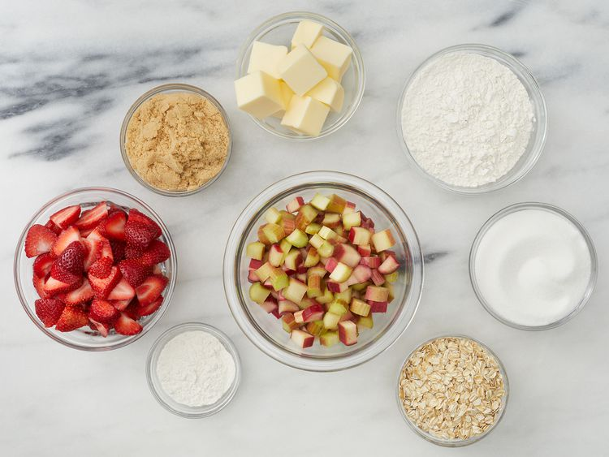
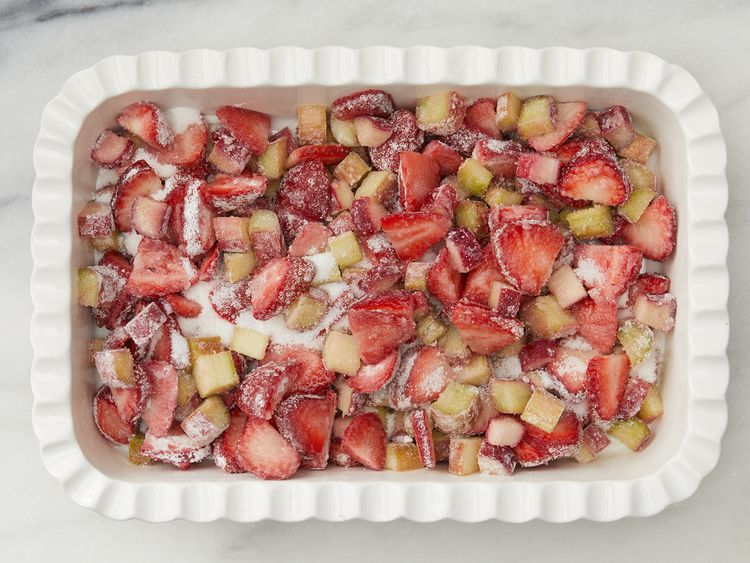
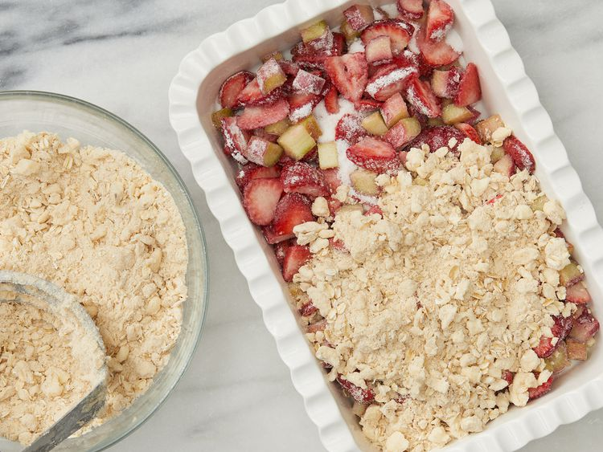
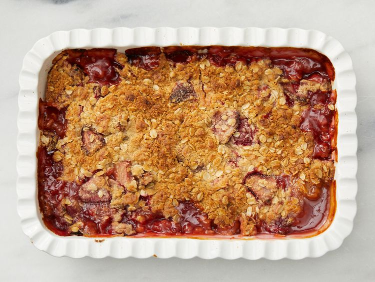

Strawberry Rhubarb Crisp
Ingredients
Fruit Layer:
- 3 cups sliced fresh strawberries
- 3 cups diced rhubarb
- 1 cup white sugar
- 3 tablespoons all-purpose flour
Crunch Topping:
- 1 ½ cups all-purpose flour
- 1 cup packed brown sugar
- 1 cup rolled oats
- 1 cup butter
Directions
- Gather all ingredients.

- Preheat the oven to 375 degrees F (190 degrees C).
- Make the fruit layer: Mix strawberries, rhubarb, white sugar, and flour together in a large bowl. Place the mixture in a 9x13-inch baking dish.

- Make the topping: Combine 1 1/2 cups flour, brown sugar, oats, and butter and mix until crumbly. You may want to use a pastry cutter for this. Sprinkle on top of the rhubarb and strawberry layer.

- Bake in the preheated oven until crisp and lightly browned, about 45 minutes.
